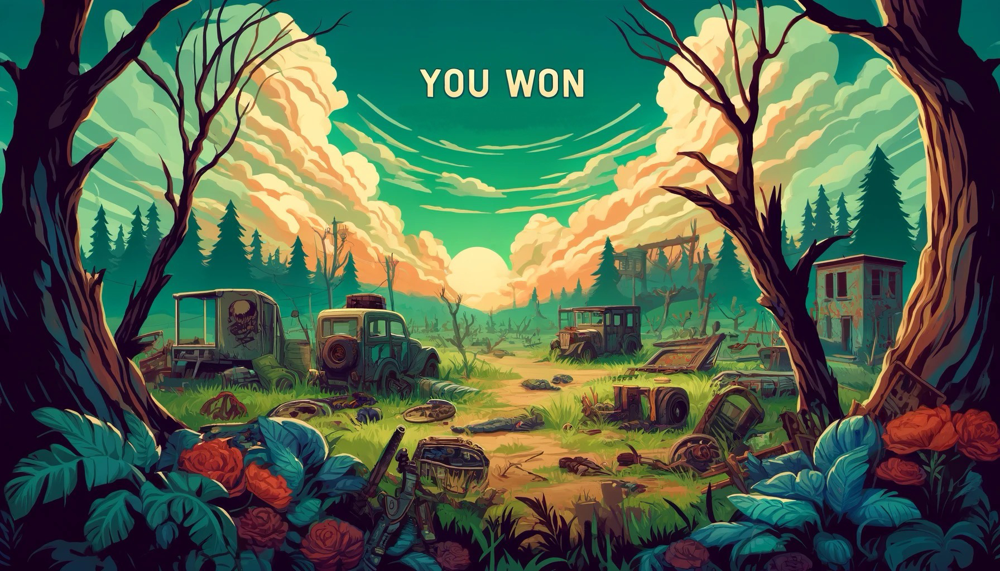

This game is based on a tower-tekno-defense game
In the game you find yourself in a world infested with zombies, and you, the army, must defend against the invading hordes of zombies
Press start to enter the game
Movement:
Press upward arrow key on your computer to move upwards (PgUp)
Press downward arrow key to move downwards (PgDn) and press Space to shoot your shot!
After game is over you can choose to end the game or to play the next level
If you choose to play the next level, the game will remain the same but with a faster speed
Making the game more challenging and intense
How do you win?
By shooting and killing your opponent before it gets to you!
 Repository Last ned her